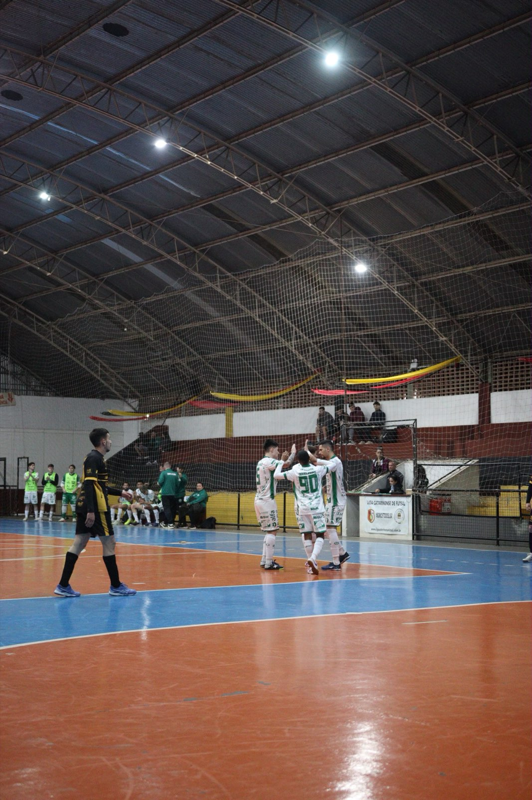
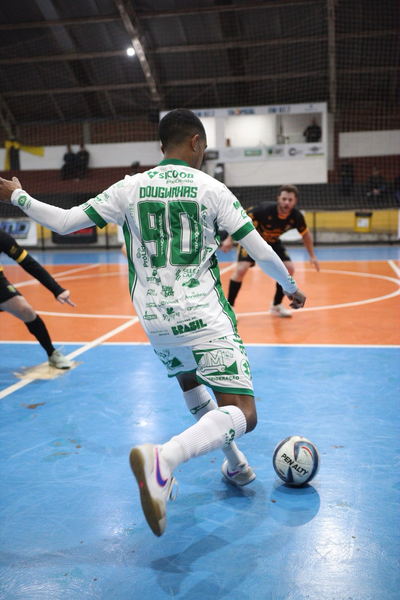

A equipe Prefeitura de Chapecó/Chapecoense/Unochapecó conquistou uma grande vitória na noite desta terça-feira (11), no Ginásio Municipal de São Carlos.

Representando o município no futsal masculino, o time do técnico Leo Schroeder goleou Galvão por 8 a 0, pela semifinal da fase microrregional dos Jogos Abertos de Santa Catarina (JASC). Com o resultado, o Verdão das Quadras está classificado à decisão do título.
A Chape Futsal deu um show de gols, com destaque para Maranhão. O ala balançou as redes três vezes. Também deixaram as suas marcas os alas Kassulas, duas vezes, Davi, Douglinhas e Mano, uma vez cada.

Chapecó disputará a final do micro contra Palmitos, que em casa eliminou São Lourenço do Oeste por 8 a 0. A partida será nesta quarta (12), às 21h, novamente em São Carlos, e terá transmissão do Canal Prudente Sports no Youtube. Os semifinalistas já estavam garantidos na etapa regional, programada para Seara, de 16 a 20 de setembro.
Crédito das fotos: @rogersilva_fotografia/@achapefutsal